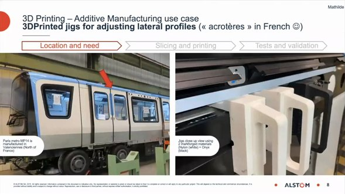
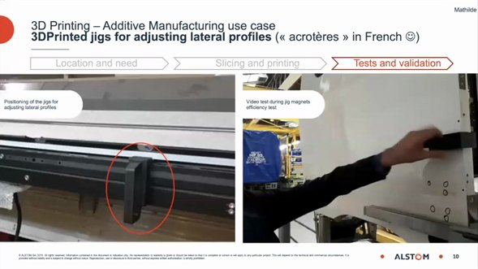
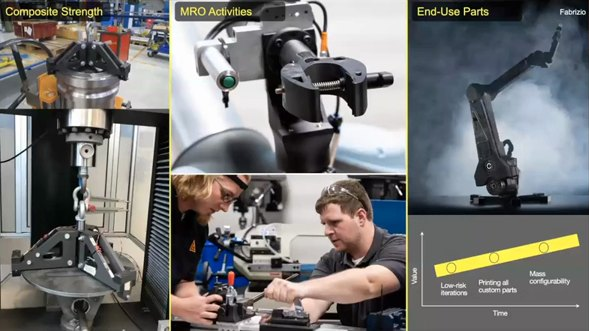

News & Insights

Alstom prints its own assembly jigs
One application is a set of locating and adjustment jigs for the side profiles of its trains (acrotères in French), printed with Markforged continuous fiber. Mathilde Lepilliez, Alstom’s 3DP hub manager, said in the Q&A that a jig requested on Friday can be delivered on Monday — cheaper and faster than going to a supplier.
“If you request this part on Friday, I can deliver them on Monday. So we are cheaper than going by supplier.”
Mathilde Lepilliez · 3DP Hub Manager, Alstom (official Markforged webinar)Where it started
From pen holders to fatigue testing of metal parts
Alstom has pursued 3D printing since 2016, aiming to supply printed parts to its own plants and to internal and external customers. Aurélien Fussel, Alstom’s 3DP program manager, recalled that in 2016 they were printing pen holders; now they are validating metal parts for fatigue.

The jigs
Jigs that follow the car body, printed in-house
The side profiles need precise positioning and adjustment during assembly. Alstom prints the jigs with Markforged continuous fiber: define location and need, slice and print, then test and validate — including a test of the jig’s magnetic hold.
Jigs like these must follow the product’s curves, come in small numbers and are needed quickly.

The cost
Why it beats buying in
Fabrizio Legrenzi of Markforged added that the printers run without supervision, so there is no labor cost during production; power draw is low — “more like an appliance” — and there is no CAM programming. The part cost is essentially the material.
Asked how Alstom chooses which parts to print, the team described correlating part data from its internal systems to target the right part families, with savings in the thousands of euros. The webinar closed by noting that this jig is one of the hundreds printed each month.

Next
From jigs to end-use parts
Alstom groups the value of additive manufacturing into three areas: composite strength for loaded parts and test jigs; tools and parts for maintenance, repair and operations; and end-use parts. Next steps are larger parts, more end-use parts and rollout across Alstom plants.
In-house tooling assessment
Tell us about your jigs and lead-time needs. Markforged engineers will assess material and printer on your actual parts and can arrange a demonstration in Taiwan, China, Hong Kong or Vietnam.
Contact usSources
- Official Markforged webinar: How Alstom boosts their business with Additive Manufacturing (9 June 2021, ~52 min); quotes transcribed from the recording, speaker names and titles from the webinar title slide
https://vimeo.com/560823783 - Images: official Markforged webinar recording
Compiled by the Markforged Greater China & Vietnam team.
Back to the Media Hub · www.markforged.tw